Le but de cet exercice est de vous présenter l'ensemble des éléments de base du langage HTML au travers de la réalisation d'un curriculum vitae. Votre tâche consiste à créer un cv simplifié dans lequel vous mettrez les informations suivantes : état civil, présentation, expériences professionnelles, formations, compétences, et loisirs. Pour vous aider à cette tâche, la structure minimale d'un document HTML est donnée ci-dessous :
<!DOCTYPE html>
<html>
<head>
<meta charset="UTF-8">
<title>Première page web</title>
</head>
<body>
<!-- Tout le contenu de la page -->
<h1>Mon premier document HTML</h1>
<p>Un premier paragraphe pour la route.</p>
</body>
</html>
Liens utiles :
http://www.w3schools.com/html/, contient des tutoriaux, des exemples ainsi qu'une applet qui permet de tester du code HTML directement dans le navigateur.
Commencez par recopier le code HTML ci-dessus dans un fichier que vous nommerez index.html (Mise à la racine d'un répertoire, cette page est celle qui sera affichée par défaut.), et ouvrez le avec un navigateur pour en voir le rendu. Modifiez le titre et le contenu du corps du document avec les informations de votre choix. Utilisez un maximum d'éléments permettant de structurer votre page : sections (e.g. <h1>), listes non ordonnées (<ul>), paragraphes (<p>), etc. Les éléments qui doivent composer votre cv sont :
Votre nom et votre statut actuel
La photo de votre choix
Une section état civil avec vos informations personnelles
Quatre sections (présentation, expériences professionnelles, formations et loisirs) dans lesquelles vous utiliserez des styles de texte et des liens vers des entreprises, universités, etc.
Tout au long de vos modifications, vérifiez que votre document est exempt d'erreurs de conformités en utilisant un validateur de code HTML 5 : celui du W3C (http://validator.w3.org) ou celui du WHATWG (http://html5.validator.nu). La capture d'écran ci-dessous est un exemple de ce que vous devez obtenir.
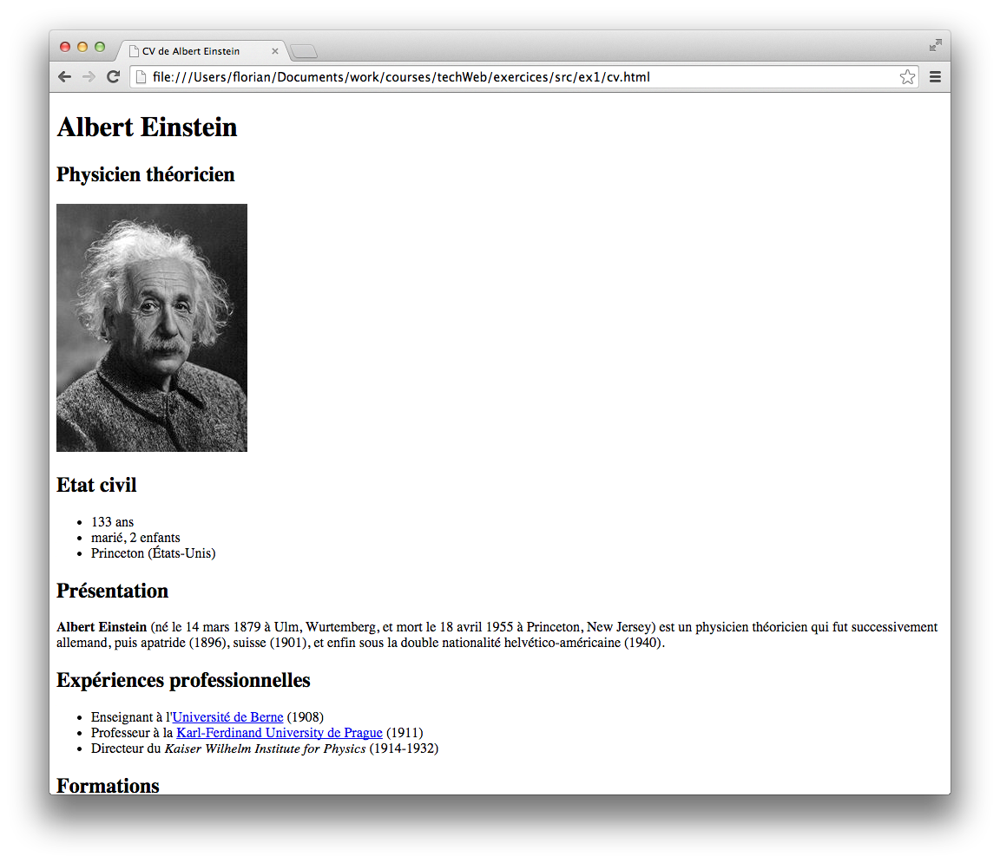
Inspection du DOM
Pour l'instant, vous avez aperçu votre document HTML de deux façons :
comme un fichier texte, à travers le code source de la page que vous avez écrit
comme une page web telle que rendue par le navigateur.
En réalité, le navigateur se représente la page HTML de façon bien plus complexe, conformément au Document Object Model (DOM). Le DOM décrit la structure (arborescente) de la page, mais aussi la façon dont on peut interagir avec la page pour la rendre dynamique (à l'aide d'un langage tel que Javascript). On peut accéder à cette représentation grâce à l'outil de développement du navigateur Firefox. Cet outil permet, entre autres, d'inspecter l'arbre, de faciliter la création des feuilles de style, et de déboguer du code Javascript.
Visualisez dans Firefox la page index.html et ouvrez l'outil de développement (menu Outils → Développement web → Outil de développement). Vérifiez que vous êtes dans l'onglet Inspecteurr et regardez comment le navigateur interprète le document sous forme d'arbre. Modifiez l'arbre (e.g. changez une partie du texte, supprimez une branche) et vérifiez que le changement se fait immédiatement sur la page web.
Rafraichissez ensuite votre navigateur. Que se passe-t-il? Pourquoi ?
Allez maintenant sur un site plus imposant (e.g. http://www.univ-nantes.fr), jetez un coup d'oeil à l'arbre.
Structurer le contenu d’une page
Dans une page web, on doit pouvoir distinguer du premier coup d'oeil les grandes zones qui la composent comme l'en-tête, la zone de navigation, le contenu propre de la page, et le pied de page.
L'élément <div> permet de créer une division de la page. Ce type de division permet de grouper dans un seul bloc un ensemble composé soit de textes, soit d'éléments inclus. Cet élément n'a malheureusement pas de rôle sémantique bien déterminé. Pour résoudre ce problème, HTML5 a introduit un ensemble de nouveaux éléments de structuration ayant chacun une fonction sémantique précise :
<section> identifie une partie de la page
<header> identifie une en-tête de page ou de section
<aside> identifie des informations complémentaires au contenu principal
<nav> est un élément dédié à la navigation sur le site
<footer> identifie le pied de page
<article>, <figure>, etc.
Un tutoriel concernant cette structuration sémantique est disponible à l'adresse http://www.w3.org/wiki/HTML_structural_elements. Modifiez votre document HTML pour y ajouter des balises sémantiques et de division selon la structure présentée dans la Figure ci dessous. Ajoutez un pied de page contenant un lien pour contacter par email le webmestre (utiliser un lien mailto). Vérifiez que vous utilisez les même attributs id que ceux décrits dans la structure.
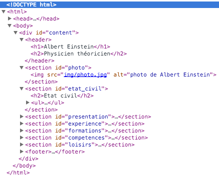
Ajout d’une feuille de style
Comme nous l'avons vu en cours, le contenu est séparé de la mise en forme. Pour décrire la mise en page, ou la façon dont les éléments sont dessinés, on a recours à un autre langage (CSS), le plus souvent placé dans un fichier séparé. Téléchargez la feuille de style style1.css et placer la dans le même répertoire que votre document HTML. Ajoutez dans l'élément <head>, la balise suivante : <link rel="stylesheet" href="style1.css">. Vous devriez maintenant voir une page web similaire a celle présentée ci-dessous.
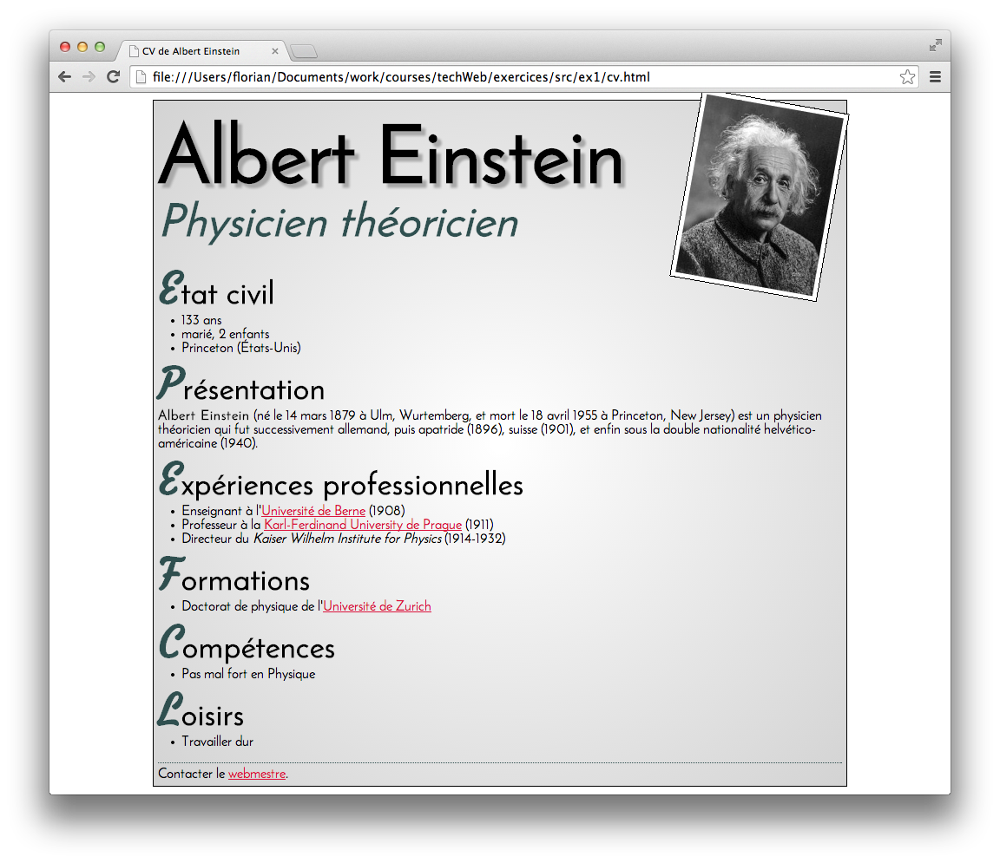
Tableaux, images et multimédia
Avec HTML, il est possible de présenter un ensemble d’informations sous la forme d’un tableau. De la même manière que dans un tableur Excel ou OpenOffice, un tableau créé en HTML est composé de lignes et de colonnes. A l’intersection de ces dernières se trouve une cellule du tableau dont le contenu peut aussi bien être constitué d’éléments de type bloc (titres, paragraphes, divisons, listes), que d’éléments en ligne comme les images, ou encore d’éléments de formulaire. Un exemple de tableau HTML est présenté ci-dessous.
La structure d’un tableau (</table>) est construite ligne par ligne. Chaque ligne (</tr> pour table row) est composée de cellules standards (</td> pour table data) et/ou de cellules qui jouent un rôle d’en-tête de colonne ou de ligne (</th> pour table header). Un titre peut être affecté au tableau avec l’élément <caption>.
Création d’un tableau HTML
Créez un document HTML contenant le tableau présenté ci-dessous. Pour aligner le contenu des cellules du tableau, vous pouvez utiliser la règle CSS text-align:center;.
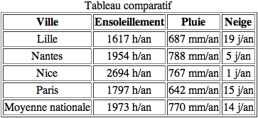
Téléchargez les images soleil.png, pluie.png et neige.png. Ajoutez ces images dans les cellules correspondantes dans l’entête du tableau. Le tableau que vous devez obtenir est montré ci-dessous.
Création de groupes de lignes et de colonnes
Afin de mieux structurer les données d’un tableau, il est possible de créer des groupes de lignes ou de colonnes. Cette structuration permet de mettre en évidence différentes parties d’un tableau et peut se révéler particulièrement utile en vue d’y appliquer des styles personnalisés. Un exemple de tableau avec des groupes lignes est donné ci-dessous. L’en-tête du tableau est créé avec <thead>, un pied de tableau est créé avec <tfoot>, tandis que corps du tableau est contenu dans l’élément <tbody>. Les groupes de colonnes sont crées avec l’élément <colgroup> qui possède, outre les attributs communs comme id, l’attribut spécifique span="N" qui définit le nombre N de colonnes du groupe. Pour plus d’information sur les groupes :
Modifiez le tableau de votre document HTML en créant des groupes de lignes (<thead>, <tbody> et <tfoot>) et de colonnes (ville, ensoleillement, pluie et neige). En utilisant la règle CSS background-color:couleur;, modifiez le style de la table pour alterner des couleurs sur les colonnes et modifiez la couleur des lignes d’en-tête et de pied de tableau. Vous pouvez également modifier l’épaisseur et la couleur des bordures (pour plus d’information à ce sujet, lisez la page https://developer.mozilla.org/fr/docs/CSS/Premiers_pas/Tableaux). Un exemple de tableau que vous devez obtenir, ici avec les couleurs HoneyDew, AliceBlue et LightSteelBlue et une bordure de 1px, est montré ci-dessous.
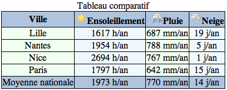
Création de tableaux irréguliers
Le tableau que vous avez créé a une structure régulière, toutes les lignes et toutes les colonnes ayant le même nombre de cellules. Ce type de présentation peut se révéler contraignant, particulièrement quand le contenu de plusieurs cellules adjacentes est varié. Pour créer des tableaux à structure irrégulière, il faut fusionner des cellules voisines comme dans un tableur. On procède à cette fusion en utilisant les attributs colspan et rowspan des éléments <td> et <th>. Pour plus d’information sur les groupes :
Créez un document HTML contenant un tableau selon le modèle suivant :
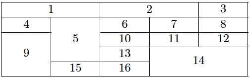
Création d’une image réactive
Avec HTML, il est possible de créer une carte définissant plusieurs zones sur une même image, chacune d’elles pouvant par exemple déclencher un script ou être à l’origine d’un lien vers un autre document. Une telle carte contient la définition de toutes les zones sensibles de l’image. Une carte est définie à l’aide de l’élément <map> qui possède l’ensemble des attributs communs. L’attribut id est obligatoire car c’est lui qui sert à associer la carte à une image à l’aide de l’attribut usemap de l’élément <img>. Chaque zone est créée par un élément <area>. La définition d’une carte doit avoir la structure suivante :
<map id="carte1">
<!-- définition de la 1ere zone -->
<area alt="zone1" />
<!-- définition de la 2eme zone -->
<area alt="zone2" />
...
</map>
On constate que l’élément area est vide. La définition des zones s’effectue par l’intermédiaire ses attributs dont voici une liste des principaux
alt : même rôle que pour l’élément img, obligatoire
href : contient l’URL du document cible qui sera affiché après un clic sur la zone
shape : permet de définir la zone sensible, rect (rectangle), circle (cercle), poly (polygone quelconque) et default (clics en dehors des zones)
coords : complète l’attribut précédent et indique les coordonnées de la forme choisie
target : permet de choisir où va s’afficher la page cible du lien
Pour plus d’information sur les images réactives :
Créez un document HTML contenant une image réactive (planetes.jpg) dans lequel un clic sur un planète ouvre une nouvelle fenêtre avec la page web de wikipedia correspondante. Un exemple est donné ci-dessous.
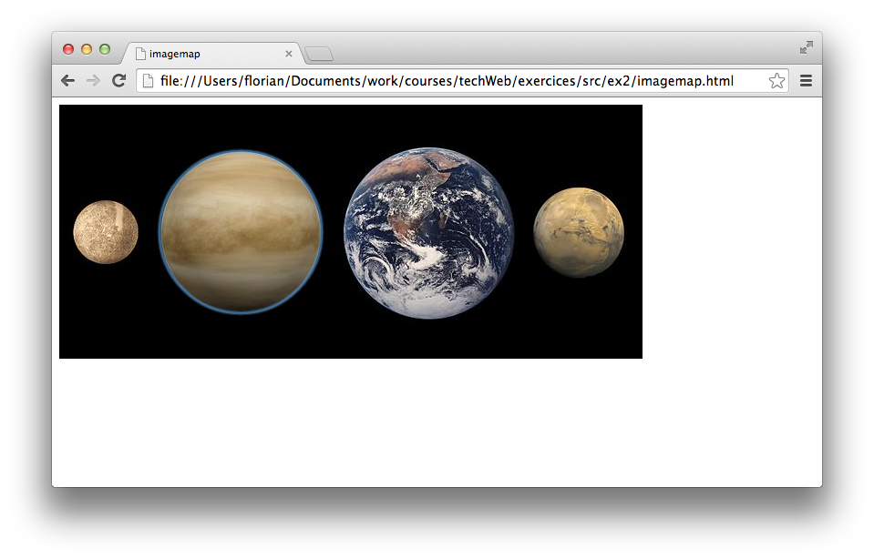
Pour vous faciliter la tâche, les coordonnées des zones (cercles) pour chaque planète sont indiquées ci-dessous.
mercure : coords="50,140,36"
venus : coords="199,140,89"
terre : coords="405,142,95"
mars : coords="571,140,50"
Insertion de vidéos et d’éléments audio
L’élément <video> constitue une des nouveautés essentielles de HTML5. Il permet, en théorie pour l’instant, d’afficher une vidéo sans avoir à utiliser un plug-in comme Quicktime ou Real Player, et ce, quel que soit le navigateur. Cependant des difficultés persistent encore aujourd’hui pour permettent une gestion aisée des différents formats de vidéos comme vous allez le voir. La syntaxe de base de l’élément <video> est la suivante :
<video src="URL fichier"> ... </video>
On peut lui ajouter des particularités avec les attributs supplémentaires
controls="controls" : permet d’afficher des éléments de contrôle (e.g. lecture, pause)
autoplay="autoplay" : déclenche la lecture dès l’ouverture de la page
poster="URL image" : affiche une image fixe le temps que la vidéo se charge
loop="loop" : pour lire le fichier en boucle
muted="muted" : pour supprimer le son
height et width : pour imposer des dimensions au cadre de la vidéo
S’il est vrai que l’élément <video> est accepté par tous les navigateurs, il n’en est pas de même avec les formats vidéo. Pour palier cet inconvénient, il faut donner plusieurs sources avec des formats différents à l’aide de l’élément <source> dont la syntaxe est la suivante.
Une autre nouveauté dans le domaine du multimédia est l’élément <audio> qui permet de lire des fichiers son dans un navigateur sans plug-in. Sa syntaxe est la suivante :
Dans laquelle les attributs sont les même que dans l’élément <video>. Là aussi, les navigateurs n’acceptent pas tous les types de fichiers. Il faut donc utiliser l’élément <source> pour spécifier différents formats.
En utilisant les ressources disponibles sur Internet, identifiez pour chacun des navigateurs principaux (Firefox, IE, Chrome, Safari et Opera) les différents formats vidéo (mp4, ogv, webm) et audio (mp3, wav, ogg) supportés.
Créez une page web contenant une vidéo muette et un fichier son à démarrage automatique. Votre page devra pouvoir être compatible avec tous les navigateurs principaux. Vous utiliserez cette vidéo et ce fichier audio. Des outils en ligne sont disponibles pour vos éventuelles conversions de fichiers.
Styles CSS
La création de styles CSS (Cascading style sheets ou feuilles de style en cascade) est le complément indispensable du langage HTML 5. Ce procédé correspond parfaitement à la séparation du contenu et de la présentation. D’une part, cette séparation permet d’alléger les pages en centralisant les définitions des styles en un point unique, une seule définition pouvant s’appliquer à un grand nombre d’éléments. D’autre part, elle facilite également la maintenance et l’évolution des sites.
Les règles générales
Une déclaration de style comporte plusieurs parties, selon l’ordre suivant :
Un sélecteur qui va déterminer à quel élément et éventuellement dans quelles conditions va s’appliquer le style
La déclaration des propriétés que l’on veut voir appliqués à l’élément sélectionné.
La syntaxe d’écriture d’un style peut être résumée par :
Sur ce modèle, nous pouvons par exemple écrire le style suivant :
div {color: red; background-color: yellow;}
dans lequel div est le sélecteur, color la première propriété qui determine la couleur du texte de l’élément, red la valeur attribué à cette couleur, background-color la seconde propriété qui représente la couleur de fond et yellow sa valeur. Tous les éléments div de la page dans laquelle se trouve cette déclaration ont donc un contenu écrit en rouge sur fond jaune.
Validation du code CSS
Comme pour HTML, il est possible de vérifier la validité des feuilles de style CSS en se connectant sur le site http://validator.w3.org/. Le validateur signale les erreurs et permet d’apporter les corrections nécessaires.
Les sélecteurs
Une des grandes richesses de CSS est la multiplicité des possibilités de sélection des éléments auxquels on veut attribuer un style donné. Cette très grande diversité permet d’appliquer un style aussi facilement à tous les éléments qu’à un unique élément isolé dans la page web.
Sélection la plus simple, pour que tous les paragraphes figure en jaune sur fond bleu :
p {color: yellow, background-color: blue;}
Appliquer le même style à plusieurs éléments différents en les énumérant ou en les regroupant :
h1 {color: yellow, background-color: blue;}
div {color: yellow, background-color: blue;}
p {color: yellow, background-color: blue;}
// équivalent à
h1, div, p {color: yellow, background-color: blue;}
Appliquer un style à tous les éléments :
* {color: yellow, background-color: blue;}
Vous avez vu que tous les éléments HTML possède l’attribut class. Ce dernier permet d’attribuer un style défini dans une classe à un élément dont l’attribut class se voit attribuer le nom de la classe. Par exemple, le style :
.important {background-color: red;}
s’applique à tous les éléments dont la classe est important, e.g. <p class="important">. Il est également possible d’appliquer plusieurs classes à un même élément, et donc appliquer plusieurs styles à un même élément, e.g. <p class="classe1 classe2">.
En pratique, chaque élément peut voir un attribut id qui doit être unique dans une page donnée. Il est possible d’appliquer un style à un élément précis avec le caractère #. Par exemple, le style suivant :
div {color: black;}
#bleu {color: white; background-color: blue;}
Puis le code HTML
<div id="bleu">Texte en Blanc sur fond Bleu</div>
<div>Texte en Noir</div>
Il est également possible d’appliquer un style à un élément déterminé dès qu’il possède un attribut donné (e.g. sélecteur[attribut]), à un élément à condition que tel attribut ait une valeur précise (e.g. sélecteur[attribut="valeur"]), à un élément à condition qu’il soit enfant direct d’un autre élément, à un élément en fonction des actions effectuées par le visiteur, etc. Pour plus d’informations, allez sur https://developer.mozilla.org/fr/docs/CSS/Getting_Started/Selectors.
Ecriture d’une feuille de style
Il existe trois méthodes pour lier des styles CSS avec un document HTML. Il est possible d’utiliser l’attribut style des éléments, de définir un élément <style> dans l’entête du document ou d’utiliser un fichier externe. Vous devez utiliser la dernière méthode, expliquée en détails sur https://developer.mozilla.org/fr/docs/CSS/Premiers_pas/Pourquoi_utiliser_CSS.
Téléchargez le fichier ex3_1.zip. Décompressez l’archive et ouvrez le fichier exercice1.html avec un navigateur pour en visualiser le contenu. Créez une feuille de style permettant d’afficher le contenu comme montré dans la figure ci-dessous.
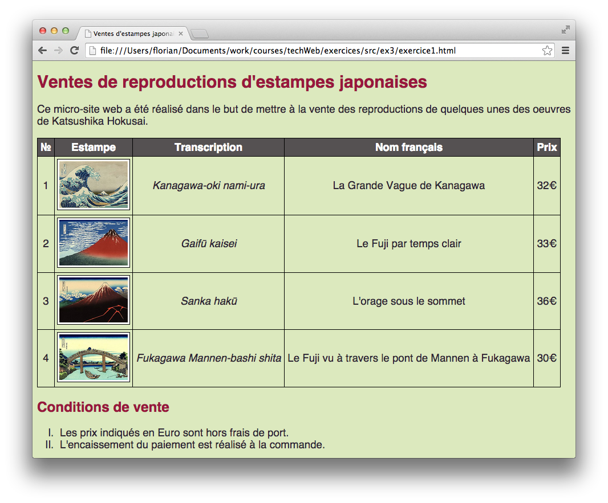
Les couleurs qui ont été choisies sont #DCE9BE pour la couleur de fond, #99173C pour les titres de section, #2E2633 pour la couleur de texte et #555152 pour la légende du tableau. La taille du titre de section 1 est de 160%, celui de niveau 2 est de 120% et la police est sans-serif en 14pt. Les images ont été normalisées avec une largeur de 120 pixels, et le contenu des cellules du tableau a été centré. Le contenu des cellules de la colonne transcription a été mis en italique. Les indices de la liste ordonnée ont été changés en chiffres romains.
Le positionnement des éléments
Le principe de positionnement permet de définir l’emplacement des boîtes générées pour chaque élément HTML présent dans le code de la page. Avant de poursuivre, veuillez lire les définitions sur les pages http://css.maxdesign.com.au/floatutorial/definitions.htm et http://learnlayout.com/. Il existe plusieurs schémas de positionnement en CSS : flux normal, positionnement flottant, positionnement absolu, positionnement fixe et positionnement relatif. Soit le document HTML positionnement.html présenté ci-dessous.
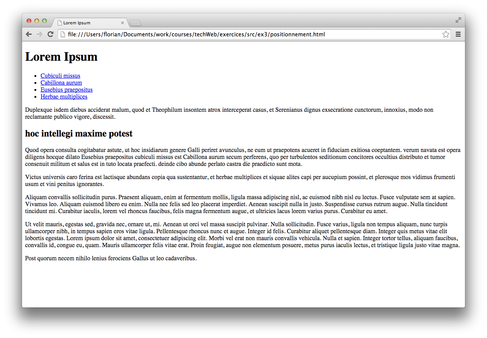
Créez une feuille de style CSS permettant de positionner les différents éléments de la page comme illustré ci-dessous. Vous ne devez pas modifier le document HTML mis à part l’insertion de la ligne pour relier le document à votre feuille de style. Pour vous aider, faites le tutoriel de positionnement disponible sur http://css.maxdesign.com.au/floatutorial/tutorial0801.htm.
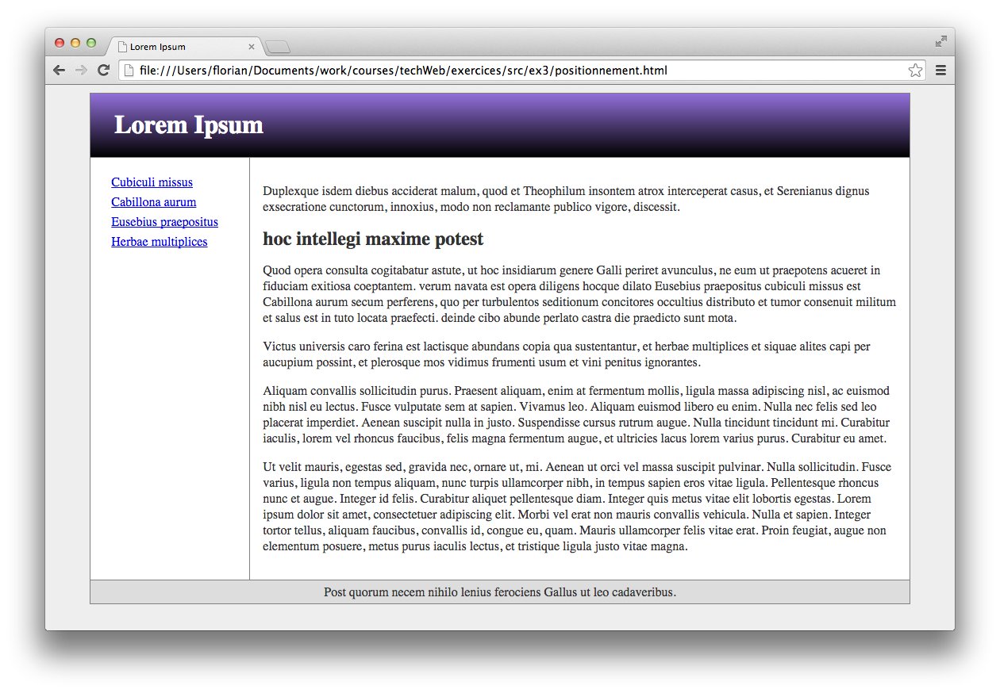
Pour réaliser le dégradé de couleur de la partie en-tête, utilisez un gradient CSS3 en vous aidant de la page https://developer.mozilla.org/fr/docs/CSS/Using_CSS_gradients. Toujours à partir du même document, créez une feuille de style CSS permettant de positionner les différents éléments de la page comme illustré ci-dessous. Les liens de navigation sont positionnés sous l’en-tête avec un effet d’onglet. Pour plus d’informations sur les propriétés des listes, allez sur http://www.alistapart.com/articles/taminglists/.
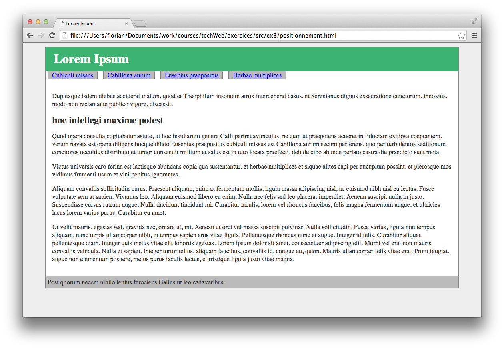
En utilisant un positionnement fixe, créez un feuille de style CSS permettant de positionner les différents éléments de la page comme illustré ci-dessous. Ici, le menu de navigation est fixe, i.e. il est toujours en haut à gauche et ce même lorsque l’on défile vers le bas. Des bordures arrondies, introduites avec CSS3, devront être utilisées pour les cadres. Plus d’informations à ce sujet sont disponibles sur https://developer.mozilla.org/fr/docs/CSS/border.
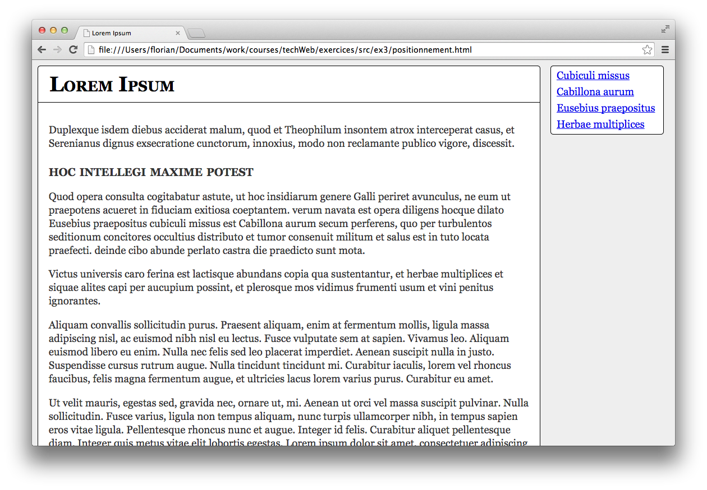
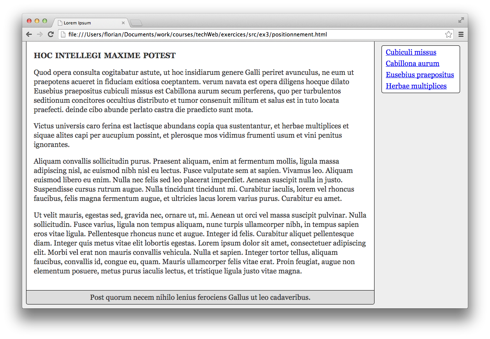
Notions avancées de CSS
Pseudo-classes et pseudo-éléments
Les sélecteurs que vous avez vu permettent d’attribuer un style à un ou plusieurs éléments bien définis dans la hiérarchie d’un document HTML. Les pseudo-classes et les pseudo-éléments permettent d’attribuer un style à une partie abstraite d’un document non identifiable dans cette hiérarchie, par exemple le premier caractère ou la première ligne d’un paragraphe. D’autres pseudo-classes permettent d’attribuer un style à un document en fonction des actions prévisibles mais non déterminées de l’utilisateur final, comme le fait de placer son curseur sur un lien ou un composant de formulaire. Plus d’informations sont disponibles sur :
Repartez du fichier positionnement.html et créez une feuille de style permettant de :
Mettre les liens visités/non-visités en rouge, les liens survolés en blanc sur fond rouge et les liens sélectionnés en vert
Changer la couleur de fond des paragraphes survolés en gris clair
Agrandir la taille de la police du premier caractère de chaque paragraphe du contenu
Changer la couleur du texte du premier paragraphe du contenu en vert foncé et agrandir la taille de sa police de 120%
Ajouter un cadre autour des paragraphes impairs du contenu
Une capture d’écran du résultat que vous devez obtenir est montré ci-dessous.
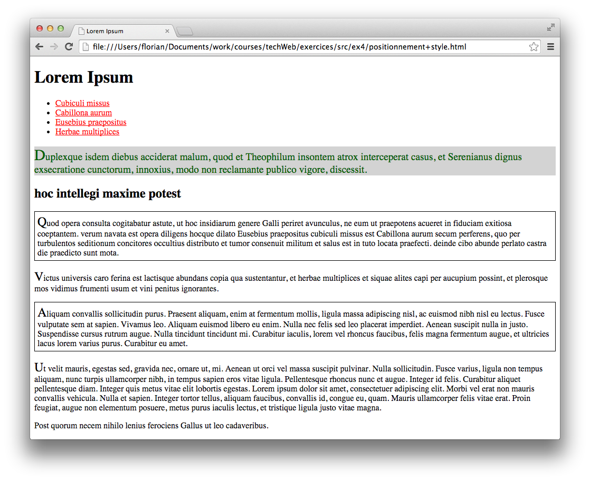
Quelques nouveaux effets CSS3
De nombreuses nouvelles fonctionnalités ont été introduites par CSS3. Il est maintenant possible de réaliser des transformations, animations, etc. directement à partir des feuilles de style. Commencez par lire les tutoriaux :
Toujours à partie de positionnement.html, créez les règles CSS permettant de réaliser les effets décrits ci-dessous :
Changer la police des titres de section par une fournie sur Google fonts et modifier leur taille.
Ajouter un effet aux liens de navigation : lorsque l’utilisateur passe sa souris sur un lien, le texte se décale vers la gauche et la couleur de fond devient rouge (utilisez transition).
Effectuer une rotation du titre de section 2 de 3 degrés vers la droite.
Ajouter une ombre rouge aux titres de section et sous-section.
Modifiez les paragraphes de la section 2 pour que le texte soit disposé dans deux colonnes.
Effectuer, lorsque l’utilisateur passe sa souris sur le contenu, une rotation complète du contenu de la page.
Ajouter une bordure aux bords arrondis au pied de page et créer une animation qui fait bouger le pied de page de gauche à droite de manière infinie.
Pour vous aider dans la création de votre feuille de style, une capture d’écran est donnée ci-dessous.
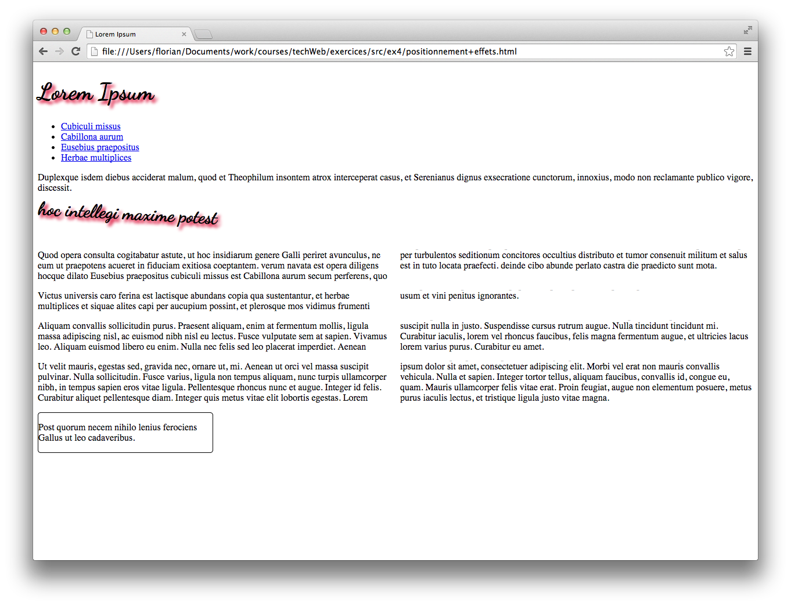
Le positionnement par grille
Le concept général de positionnement en grille (Grid Layout) consiste à diviser virtuellement l’espace en différentes zones. Concrètement et schématiquement, il s’agit de découper en lignes et en colonnes comme vous le feriez pour un tableau de mise en page. Utiliser ce type de positionnement facilite grandement la mise en page CSS et par conséquent permet d’accélérer le temps de développement. CSS3 inclut un module de Grid Layout qui malheureusement est encore au stade de brouillon. Pour pallier ce problème, de nombreux frameworks CSS de positionnement en grille ont été développés : Blueprint, 960 Grid System, 1140 CSS grid, etc. Le but de cet exercice est de vous familiariser avec ce type d’outil.
Depuis les dernières années, les médias capables de visualiser une page web se sont multipliés. Il n’ont pas tous les mêmes capacités en termes d’affichage, bien que la différence de résolution entre un ordinateur et un téléphone portable, par exemple, s’amenuise de plus en plus, sans parler des tablettes tactiles. Il est donc nécessaire d’adapter la présentation d’une page pour tenir compte des capacités de ces différents terminaux. C’est l’objet des Media Queries qui permettent de cibler ces terminaux et de créer des styles spécifiques adaptés à chaque catégorie.
Les Media Queries sont des expressions booléennes qui sont associées à des ensembles de styles spécifiques. Si la condition est réalisée, les styles qui suivent sont appliqués. Avec l’élément <link>, la condition est écrite dans l’attribut media sous la forme :
<link rel="stylesheet" media="terminal and (expression)" href="style.css">
Le nom du terminal doit être donné par un des mots clés du tableau ci-dessous. Il peut être précédé de l’opérateur only (seulement celui-là) ou not (tout mais pas celui-là).
Mot-clé
Description
aural
Navigateur oral (qui transcrit le texte en parole)
braille
Terminal qui transcrit en braille
handheld
Téléphone (pas forcement reconnu par les téléphones)
print
Imprimante
projection
Rétro-projecteur
screen
Ecran d’ordinateur, tablette, téléphone
tv
Télévision
all
Tous les médias confondus
La définition des styles dans l’élément <style> utilise la directive @media pour contenir l’expression booléenne, elle est suivie des styles choisis sous la forme :
@media terminal and (expression) {
element1 {style1:valeur;}
element2 {style2:valeur;}
}
Par exemple, pour cibler les écrans dont le navigateur a une largeur supérieure à 640 pixels et fixer la couleur du texte en bleu, il faut écrire le code suivant :
@media screen and (min-width: 400px) {
body {color:red;}
}
Pour plus d’informations, visitez les tutoriels aux adresses suivantes :
Téléchargez les documents example.html, style-ecran.css et tux.png à partir du site web du cours. Ouvrez le document HTML avec un navigateur pour en visualiser le contenu. La capture d’écran ci-dessous illustre ce que vous devez obtenir.
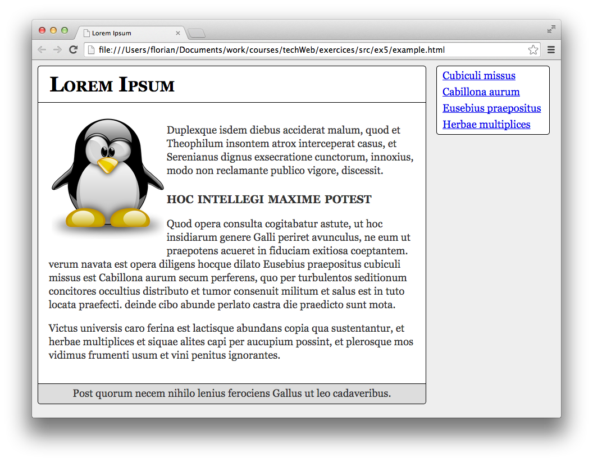
Votre tâche consiste à créer deux feuilles de style pour des terminaux différents et d’utiliser les Media Queries pour sélectionner la feuille de style la plus adaptée.
La première feuille de style doit permettre une meilleur visualisation du contenu pour les navigateurs aynt une résolution de moins de 640 pixels de largeur. Les modifications de style qui y ont été apportées sont : déplacement des liens de navigations, suppression des cadres, réduction de l’image, réduction de la taille de la police, etc. La seconde feuille de style est destinée a adapter le contenu pour l’impression. Ici, il s’agira de supprimer les liens de navigation et le pied de page, de changer le fond en blanc, etc. Des exemples de ce que vous devez obtenir sont montré dans les deux figures ci-dessous.
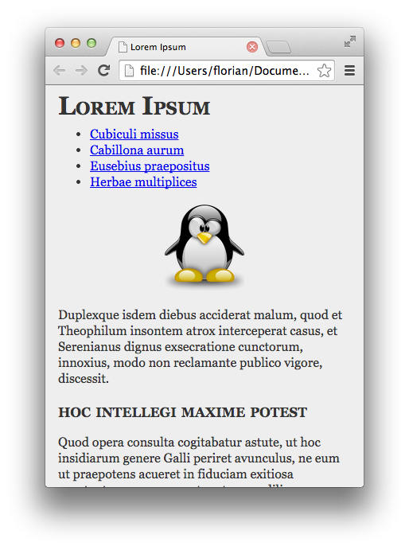
Dessin vectoriel SVG
Le langage SVG (Scalable Vector Graphics) est une application XML qui permet de créer des dessins vectoriels, aussi bien des figures géométriques que des textes et même des images complexes. Il est possible d’inclure des images SVG de deux façons différentes. Tout d’abord en incluant un fichier .svg, créé manuellement ou en utilisant un logiciel comme Inkscape, à l’aide de l’élément <embed>. La seconde méthode consiste à écrire le code directement dans la page à l’aide de l’élément <svg>. C’est cette dernière méthode que vous devrez utiliser ici. La structure d’une page contenant du code SVG est la suivante :
<!DOCTYPE html>
<html>
<head>
<meta http-equiv="Content-type" content="text/html;charset=UTF-8" />
<title>Document avec SVG</title>
</head>
<body>
<svg width="400" height="300" version="1.1">
<!-- Eléments de création des figures -->
</svg>
</body>
</html>
Les attributs width et height définissent les dimensions de la boîte qui va contenir le dessin créé par les éléments inclus dans <svg>. On pourra ensuite utiliser les propriétés CSS, comme on l’effectue avec une image ordinaire, pour la positionner. Pour plus d’information, lisez les tutoriels :
A partir d’une boîte de dimension 600 pixels par 200 pixels, votre tâche consiste à reproduire aussi fidèlement que possible la figure montrée ci-dessous. Chaque drapeau doit avoir un lien vers la page Wikipedia du pays correspondant. Ainsi lorsque l’utilisateur clique sur un drapeau, une nouvelle fenêtre est ouverte avec l’article Wikipedia du pays correspondant.
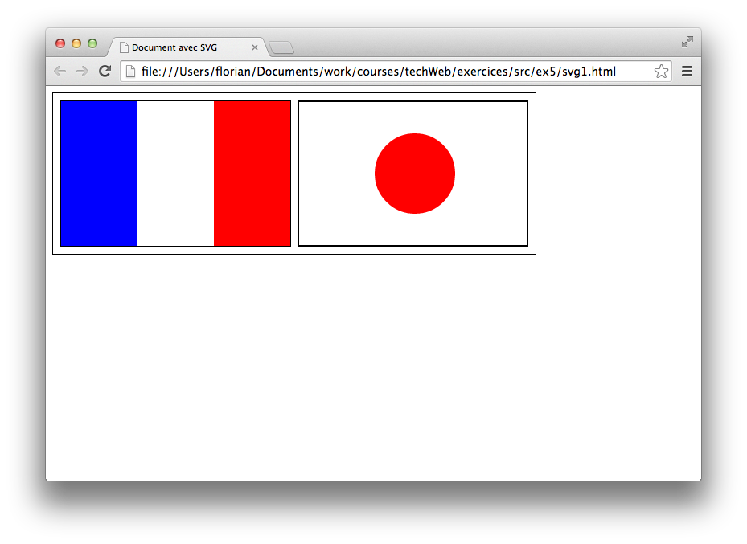
A partir d'un dessin SVG existant (panda.html), votre tâche sera ensuite de modifier le style des éléments à l'aide de règles CSS. Dans un deuxième temps, créez une animation permettant de faire tourner l'image sur elle-même. Une vidéo de ce que vous devez obtenir est disponible ci-dessous.


{kind=link}
{kind=link}
{kind=link}
{kind=link}
{kind=link}